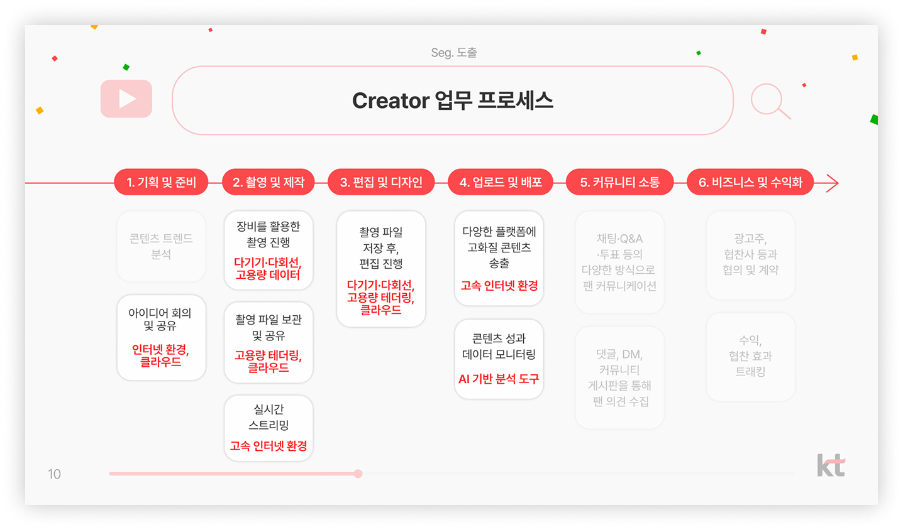
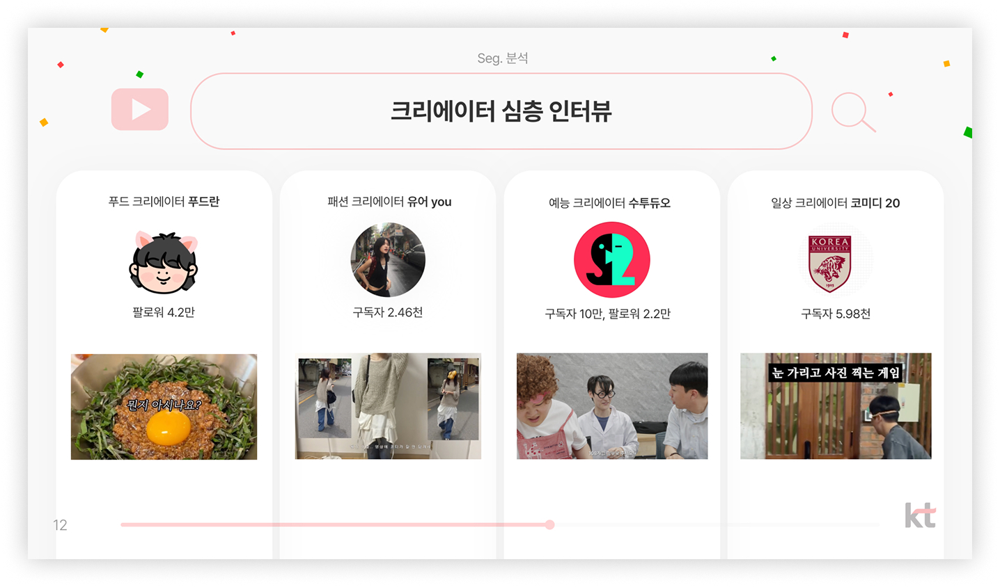
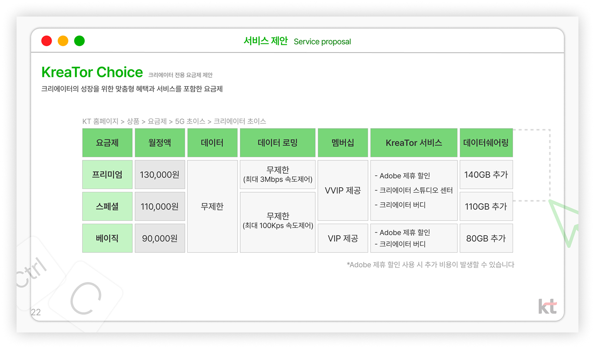

Creator Segment Strategy, Qualitative Research, and Feasibility-Driven Marketing Proposal
I developed a creator-focused segment strategy to identify new growth opportunities for KT in a highly saturated telecom market.
Rather than approaching the problem as a conventional segmentation exercise, I analyzed how creators work, produce, and communicate, and reframed them as a distinct user group with unique operational and connectivity needs.
I translated qualitative insights from 100K+ subscriber creators into an execution-ready proposal, connecting audience understanding to service design, messaging, and go-to-market direction.
The project received Second Prize, with feedback highlighting its ability to identify an overlooked segment and present a compelling, feasible strategy.
KT operates in a mature telecom market where traditional segmentation—based on age, usage, or price sensitivity—offers limited room for differentiation.
The challenge was to identify a new growth segment that is both strategically meaningful and operationally actionable, and to communicate it in a way that feels credible within KT’s existing service ecosystem.
This required going beyond surface-level segmentation and redefining users based on how they work and create value, not just who they are.
Traditional telecom segmentation overlooks how people actually use connectivity in their work.
Creators operate through continuous production, upload, and distribution workflows, meaning their needs are defined by efficiency, stability, and speed, not just data consumption.
However, most telecom services do not reflect the end-to-end work journey of creators, creating a gap between service design and real usage.
Define creators as a workflow-driven segment and design telecom services around their production journey.
I redefined segmentation based on how users work rather than demographic attributes, mapping the creator journey from ideation to upload and distribution.
I translated qualitative insights from creator interviews into specific service directions, identifying where telecom infrastructure could support production efficiency and reduce friction.
To ensure the strategy was actionable, I grounded recommendations in KT’s existing service capabilities, aligning new ideas with realistic implementation paths.
Conducted desk research on telecom market structure and analyzed the creator ecosystem to identify emerging behavioral patterns.
Mapped the creator workflow and conducted qualitative interviews with 100K+ subscriber creators to identify needs, barriers, and value drivers.
Defined the creator segment and developed service and marketing directions based on workflow insights.
Refined the proposal by aligning recommendations with KT’s existing services and incorporating practitioner feedback.

Analysis of the target creator’s workflow

In-depth creator interviews

Strategic service proposal
Demonstrated the ability to redefine market segmentation and translate qualitative insights into a feasible, execution-ready telecom strategy.